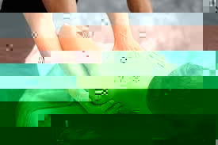
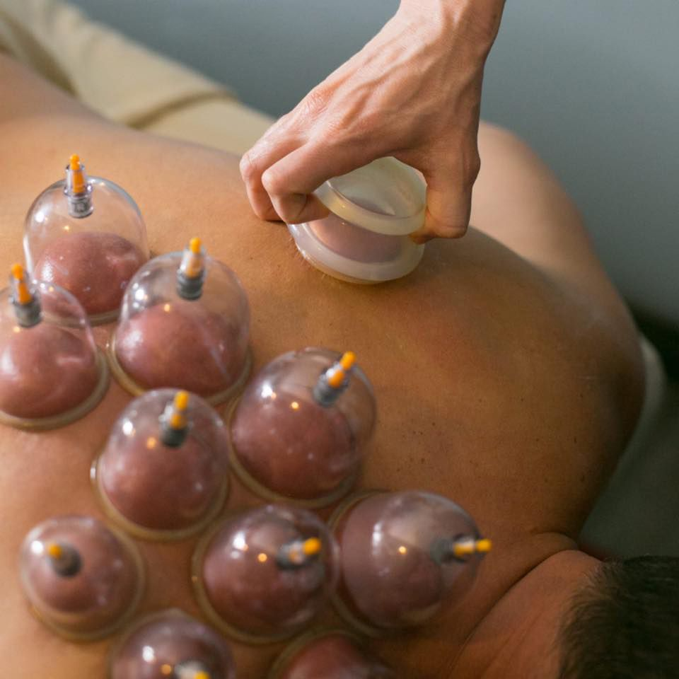

Swedish Massage
Swedish massage is the perfect thing for relaxation. Enjoy 60 minutes or 90 minutes of light to medium pressure, and let your stress melt away. Benefits of a swedish massage can include an increase of oxygen in the blood, improved circulation, and flexibility.
Neuromuscular Massage
Neuromuscular Massage Therapy is ideal for those aches and pains. Treatment include relaxation techniques, trigger point therapy, passive stretching, and postural correction.
Cupping
Cupping is the use of hard plastic or silicone cups. These tools create a suction or "negative pressure" on your tissue. This is an execellent way to unbind fascia, bring new blood full of nutrients to an area otherwise lacking, and help to those deeper, harder to reach places with a gentler approach.